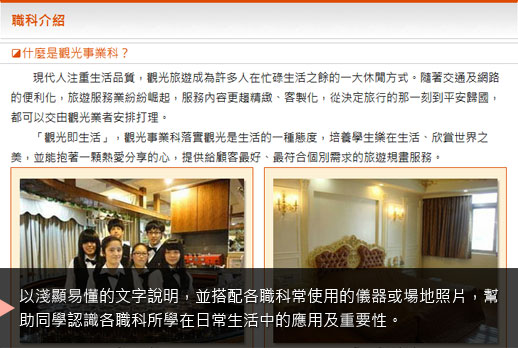
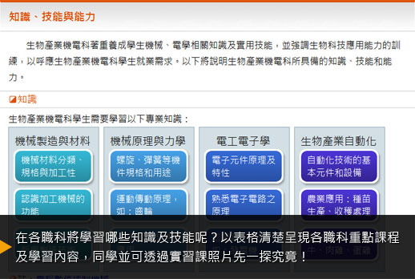
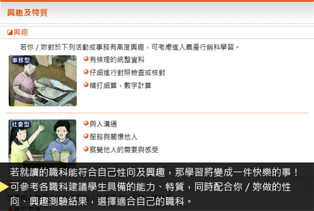
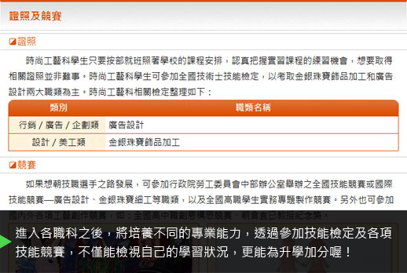
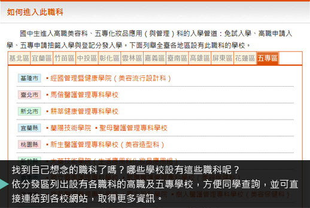
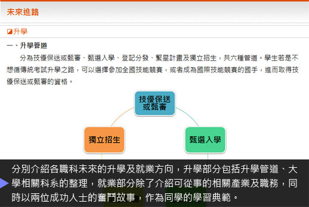
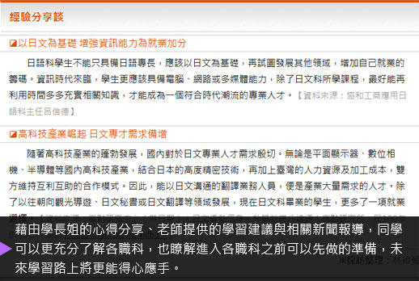

以淺顯易懂的文字說明，並搭配各職科常使用的儀器或場地照片，幫助同學認識各職科所學在日常生活中的應用及重要性。

在各職科將學習哪些知識及技能呢？以表格清楚呈現各職科重點課程及學習內容，同學並可透過實習課照片先一探究竟！

若就讀的職科能符合自己性向及興趣，那學習將變成一件快樂的事！可參考各職科建議學生具備的能力、特質，同時配合你/妳做的性向、興趣測驗結果，選擇適合自己的職科。

進入各職科之後，將培養不同的專業能力，透過參加技能檢定及各項技能競賽，不僅能檢視自己的學習狀況，更能為升學加分喔!

找到自己想念的職科了嗎?哪些學校設有這些職科呢?依分發區列出設有各職科的高職及五專學校，方便同學查詢，並可直接連結到各校網站，取得更多資訊。

分別介紹各職科未來的升學及就業方向，升學部分包括升學管道、大學相關科系的整理，就業部分除了介紹可從事的相關產業及職務，同時以兩位成功人士的奮鬥故事，作為同學的學習典典範。

藉由學長姐的心得分享、老師提供的學習建議與相關新聞報導，同學可以更充分了解各職科，也瞭解進入各職科之前可以先做的準備，未來學習路上將更能得心應手。